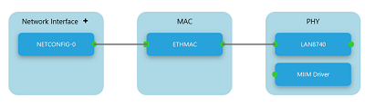
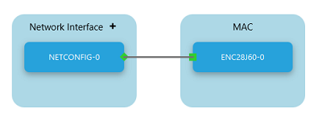
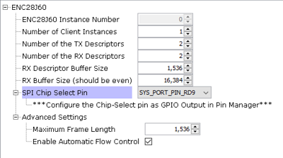
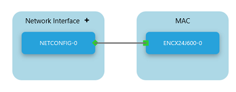
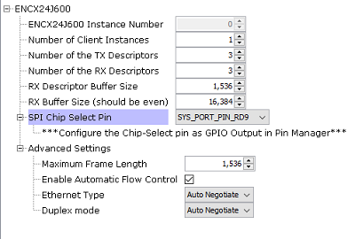

1.1 TCP/IP TCP Client
This application demonstrates usage of MPLAB Harmony TCP API to implement a TCP client that establishes TCP/IP connection to a TCP server.
Description
The TCP/IP TCP Client application is based on MPLAB® Harmony 3 TCP/IP Stack.
The Harmony TCP/IP stack is a collection of different network protocols.
The source files of Harmony 3 TCP/IP stack is available here.
The demo is created with MPLAB X IDE and MCC plugin.
MCC Project Graph - TCP/IP TCP Client
The following Project Graph shows the Harmony components included in the TCP/IP TCP Client demo application.
The root layer project shows that UART2 peripheral is selected to do read and write operation for TCP/IP commands.
This is the basic configuration with SYS_CONSOLE, SYS_DEBUG and SYS_COMMAND modules. These modules are required for TCP/IP command execution.
TCP sockets calculate the ISN using the wolfSSL crypto library.
FreeRTOS component is required for RTOS application. For bare-metal (non-RTOS) FreeRTOS component should not be selected.
NOTE - TCPIP Ethernet Priority should be lower compared to FreeRTOS module priority number. PIC32MX low the priority number = low priority.
Both ENC28J60 and ENCX24J600 daughter board use SPI driver and SPI1 peripheral to communicate with the PIC32MX controller.
TCP sockets calculate the ISN using the wolfSSL crypto library.
TCP/IP Configuration - TCP/IP TCP Client
The TCP/IP modules enabled for the demo is shown in the TCP/IP Configuration Overview
More details of TCP/IP Configuration plugin is available here
- TCP/IP Application Layer
Modules
- ANNOUNCE to discover the Microchip devices within a local network.
- DHCP Client to discover the IPv4 address from the nearest DHCP Server.
- DNS Client provides DNS resolution capabilities to the stack.
- NBNS NetBIOS Name Service protocol associates host names with IP addresses. This assign of human-name host names to access boards on the same subnet.
- SNTP Simple Network Time Protocol updates its internal time periodically using a pool of public global time servers.
- TELNET provides bidirectional, interactive communication between two nodes on the Internet or on a Local Area Network.
- TCP/IP Data Link Layer
- Internal Ethernet
Driver (ETHMAC)
Internal Ethernet Driver (ETHMAC) is enabled with the external LAN8740 PHY driver library. The MIIM Driver supports asynchronous read/write and scan operations for accessing the external PHY registers and notification when MIIM operations have completed.
 - External ENC28J60
Ethernet Driver
The ENC28J60 driver module selected for the external ethernet mac ENC28J60 device. For high MAC TX and RX performance DRV_ENC28J60_MAC_TX_DESCRIPTORS and DRV_ENC28J60_MAC_RX_DESCRIPTORS can be configured respectively more than the default descriptor value size "2".
Refer below for the components selected in the Data Link Layer of the TCP/IP stack
GPIO RD9 pin is configured for SPI chip select.
 - External ENCX24J600
Ethernet Driver
The ENCX24J600 driver module selected for the external ethernet mac ENCX24J600 device. For high MAC TX and RX performance DRV_ENCX24J600_MAC_TX_DESCRIPTORS and DRV_ENCX24J600_MAC_RX_DESCRIPTORS can be configured respectively more than the default descriptor value size "3".
Refer below for the components selected in the Data Link Layer of the TCP/IP stack
GPIO RD9 pin is configured for SPI chip select.

- Internal Ethernet
Driver (ETHMAC)
Downloading and Building the application
To clone or download this application from Github, go to the main page of this repository and then click Clone button to clone this repository or download as zip file.
This content can also be downloaded using content manager by following these instructions.
Path of the application within the repository is apps\tcpip_tcp_client\firmware
To build the application, refer to the following list of demo configurations and open the project using MPLAB X IDE.
| Project Name | Target Device | Development Board | Description |
|---|---|---|---|
| pic32mx_eth_sk2.X | PIC32MX795F512L | PIC32MX Ethernet Starter Kit II | TCP/IP TCP Client with LAN8740 PHY Daughter Board - Bare Metal |
| pic32mx_eth_sk2_enc28j60.X | PIC32MX795F512L | PIC32MX Ethernet Starter Kit II + External Ethernet Controller ENC28J60 + I/O Expansion Board | TCP/IP TCP Client with External Ethernet Controller ENC28J60 - Bare Metal |
| pic32mx_eth_sk2_encx24j600.X | PIC32MX795F512L | PIC32MX Ethernet Starter Kit II + External Ethernet Controller ENCX24J600 + I/O Expansion Board | TCP/IP TCP Client with External Ethernet Controller ENCX24J600 - Bare Metal |
| pic32mx_eth_sk2_freertos.X | PIC32MX795F512L | PIC32MX Ethernet Starter Kit II | TCP/IP TCP Client with LAN8740 PHY Daughter Board - FreeRTOS |
Hardware Setup - LAN8740 PHY DB
The target board for running the application is PIC32 Ethernet Starter Kit II.
This section provides essential hardware configuration of this target board to run TCP/IP applications.
Board Setup
To set up the hardware, refer to the chapter Hardware in PIC32 Ethernet Starter Kit II User’s Guide .
- Connect the mini USB cable from the computer to the DEBUG USB (J7) connector on the PIC32 Ethernet Starter Kit II.
- Establish a connection between the router/switch with the PIC32 Ethernet Starter Kit II through the RJ45 connector on PHY daughter board.
- Note: The PIC32 Ethernet Starter
Kit II does not have an on-board UART connector.
- If a serial console is needed, a quick setting may be connecting the Starter Kit to an USB-UART converter( like FTDI) via a Starter Kit I/O Expansion Board.
- The PIC32 Ethernet Starter Kit II is connected to J1 on the Starter Kit I/O Expansion board.
- The Pin 46 (U2RX) and Pin 48 (U2TX) from connector J11 on I/O Expansion Board can be used for serial console (as shown above).
-
Alternatively, a TELNET session could be established for console message and executing the application & TCP/IP commands.
Hardware Setup - External Ethernet Controller ENC28J60
The target board for running the application is PIC32 Ethernet Starter Kit II.
This section provides essential hardware configuration of this target board to run TCP/IP applications.
Board Setup
To set up the hardware, refer to the chapter Hardware in PIC32 Ethernet Starter Kit II User’s Guide .
- Connect the mini USB cable from the computer to the DEBUG USB (J7) connector on the PIC32 Ethernet Starter Kit II.
- The 10Mbps Ethernet PICtail Plus Daughter Board is inserted to J2(or J4) on the Starter Kit I/O Expansion Board. The J2, PICtail Plus (SPI) connector on Ethernet PICtail Plus Daughter Board is attached to I/O Expansion Board. The PICtail daughter board is inserted to use SPI1.
- Refer to the ENC28J60 External Ethernet PICtail Plus Daughter Board.
- The Pin 26 and Pin 47 on J11 (on I/O Expansion Board) needs to be connected to control the Chip-Select line by the PIC32 Ethernet Starter Kit II (as shown above).
- Note: The PIC32 Ethernet
Starter Kit II does not have an on-board UART connector.
- If a serial console is needed, a quick setting may be connecting the Starter Kit to an USB-UART converter( like FTDI) via a Starter Kit I/O Expansion Board.
- The PIC32 Ethernet Starter Kit II is connected to J1 on the Starter Kit I/O Expansion board.
- The Pin 46 (U2RX) and Pin 48 (U2TX) from connector J11 on I/O Expansion Board can be used for serial console (as shown above).
-
Alternatively, a TELNET session could be established for console message and executing the application & TCP/IP commands.
Hardware Setup - External Ethernet Controller ENC624J600
The target board for running the application is PIC32 Ethernet Starter Kit II.
This section provides essential hardware configuration of this target board to run TCP/IP applications.
Board Setup
To set up the hardware, refer to the chapter Hardware in PIC32 Ethernet Starter Kit II User’s Guide .
- Connect the mini USB cable from the computer to the DEBUG USB (J7) connector on the PIC32 Ethernet Starter Kit II.
- The Fast 100Mbps Ethernet PICtail Plus Daughter Board is inserted to J2(or J4) on the Starter Kit I/O Expansion Board. The J2, PICtail Plus (SPI) connector on Fast 100Mbps Ethernet PICtail Plus Daughter Board is attached to I/O Expansion Board with white arrows on the two boards lined up. The PICtail daughter board is inserted to use SPI1.
- Refer to the ENC624J600 External Ethernet PICtail Plus Daughter Board.
- The Pin 26 and Pin 47 on J11 (on I/O Expansion Board) needs to be connected to control the Chip-Select line by the PIC32 Ethernet Starter Kit II (as shown above).
- Connect the micro USB cable from the computer to the J3 connector (which is on backside of PIC32 Ethernet Starter Kit II) to power up the External Ethernet PICtail Plus Daughter Board.
- Note: The PIC32 Ethernet Starter
Kit II does not have an on-board UART connector.
- If a serial console is needed, a quick setting may be connecting the Starter Kit to an USB-UART converter( like FTDI) via a Starter Kit I/O Expansion Board.
- The PIC32 Ethernet Starter Kit II is connected to J1 on the Starter Kit I/O Expansion board.
- The Pin 46 (U2RX) and Pin 48 (U2TX) from connector J11 on I/O Expansion Board can be used for serial console (as shown above).
-
Alternatively, a TELNET session could be established for console message and executing the application & TCP/IP commands.
Running the Application
- Open a terminal application on the host computer (like Hyper-terminal or Tera Term).
- Configure the terminal application for serial port connected to USB-UART connector.
- Set baud rate as 115200 in the terminal application.
- Build and download the application project on the target board.
- Verify the TCP/IP Stack initialization console messages.
Console Start up
If DHCP client is enabled in the demonstration, wait for the DHCP server to assign an IP address for the development board.
This will be printed on the console. Otherwise, the default static IP address will be assigned to the board.
By entering the command netinfo, the response is obtained as shown above.
TCP Client Test
Enter following command in console: openurl <url>. For example, openurl http://www.microchip.com/.
The response from the server will be printed on the console as shown below.
Alternatively, open TELNET session using the login credentials.
Test with TELNET
-
Open the windows command prompt (i.e., cmd).
-
Enter the command telent <ip address of board>
-
Now, login using credentials provided in the application.
-
Upon successful login, the telnet terminal is ready for executing the application & TCP/IP commands.
-
See below for test output: